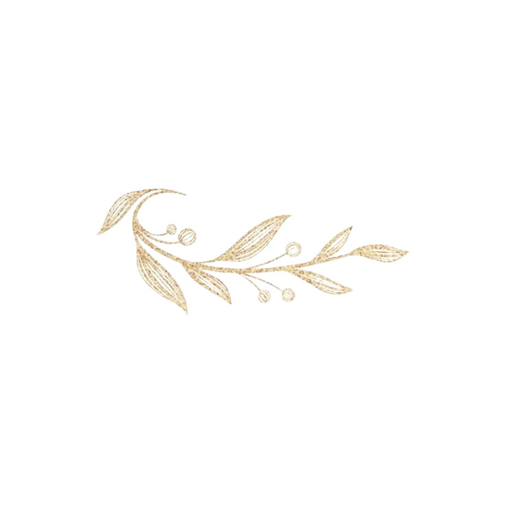

Hayatımızın en özel başlangıcına, sevdiklerimizle birlikte adım atmak dileğiyle.
"Kınamızda sizlerle olmanın heyecanını yaşıyoruz."
Ses Lounge Events
Sazova, Bilim Kültür ve Sanat Parkı İçi, Tepebaşı / EskişehirLütfen yanıtınızı bildiriniz.
Hayatımızın en özel başlangıcına, sevdiklerimizle birlikte adım atmak dileğiyle.
26 Eylül 2026 - Cumartesi | Saat: 19:00
"Sizinle bu anı paylaşmak için sabırsızlanıyoruz."
Ses Lounge Events
Sazova, Bilim Kültür ve Sanat Parkı İçi, Tepebaşı / EskişehirZarafetinizi siyah, vizon ve krem tonlarıyla tamamlamanız dileğiyle.
Mevsim Yeşillikleri, Közlenmiş Biber Ezmesi
Fırınlanmış Dana Bonfile, Safranlı Pilav
Karamelize İncir, Vanilyalı Panna Cotta
En büyük hediyeniz yanımızda olmanızdır. Katkıda bulunmak isteyen sevdiklerimiz için;
IBAN kopyalandı ✓
Bu özel gecede çektiğiniz en güzel kareleri anı galerimize yükleyebilirsiniz.
Teşekkürler! Anılarınız için sabırsızlanıyoruz.
Lütfen yanıtınızı bildiriniz.
Bu Özel Günümüzde Yanımızda Olduğunuz İçin Teşekkür Ederiz.
DAVET & CO. | Dijital Davetiye Deneyimi